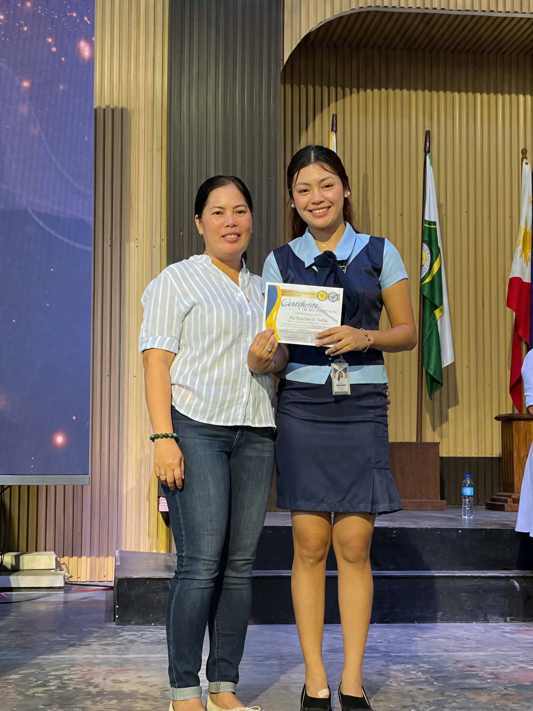

Academic mentorsGuidance for the work of learning.
Great learning is personal. It grows through teachers who challenge, guide, listen, and make room for students to become more.
Our faculty and staff bring knowledge, care, and a commitment to the mission of Catholic education.
The names and profiles below are placeholders for the official school roster. Replace them with approved faculty information before publishing.



Curiosity is part of learning. Students are encouraged to think deeply and ask honestly.
We value steady effort, useful feedback, and the confidence that comes from trying again.
We connect learning to the needs of other people and the wider community.
Explore programs and begin a conversation with the admissions team.